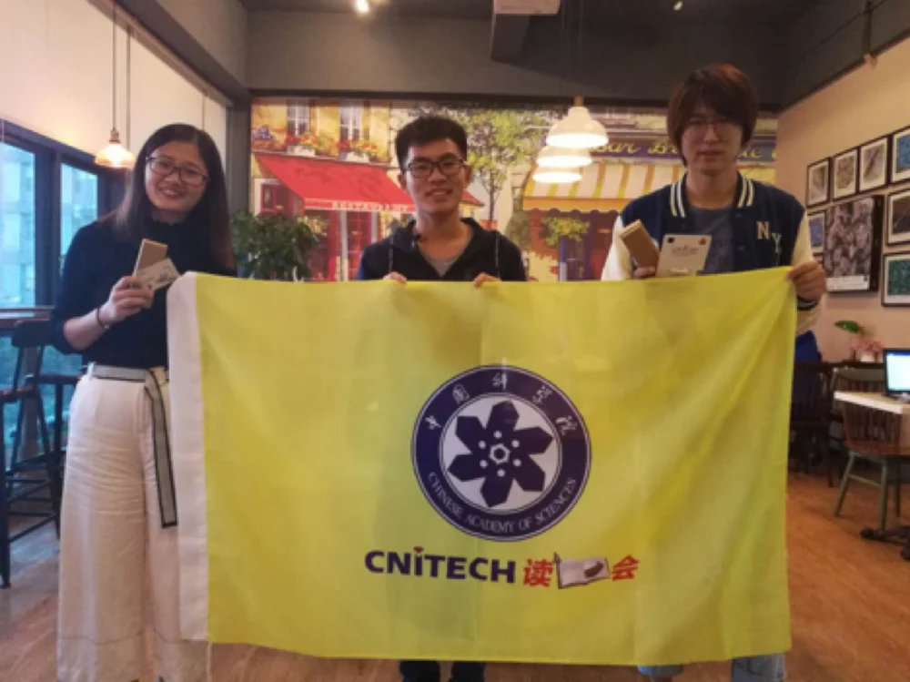
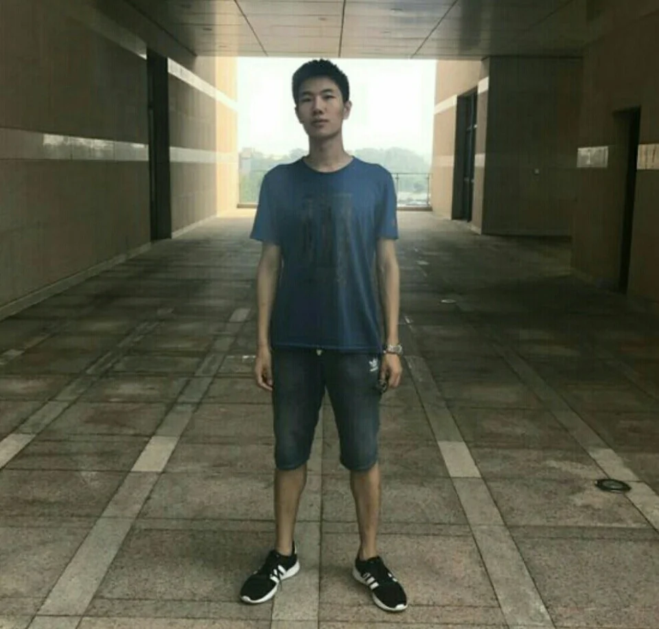

10月13日，我组2017届研究生新生张天阳师弟获得2017年中科院宁波材料所“读书会”三行诗大赛三等奖。
希望接下来的日子大家能够积极参与文化建设活动，一起兴趣科研，快乐生活。

图1 领奖（由于张天阳目前在北京学习，团队成员阎岐峰代替张天阳领奖）

图2 张天阳
附天阳诗两首：
《梦》
雨季过后，蟋蟀等来日落。
连接黑夜与星空的小巷，
汇聚宴会的中央。
风是舞者，
穿着碎叶的裙子，
来自四面八方。
如果我没有猜错，
是丁香开了。
因为，
我触到她们的衣角，
嗅到细腻的芬芳。
路口
灯谢了。
那红色，
终不敌绿的婀娜。
片刻。
熙攘的洪流，
穿过仍在盛开的霓虹。
让我，
在你眼中淹没。
《世界》
不知多久，我生在黑暗的鼓中。
心的细语，在回音里渐渐呼唤；
低声即是呐喊。
每个想法，逐个词语，
同爱与恨
变为重重回声，潮水与巨浪一叠一叠撼动我的心。
坚硬冰冷的礁石，抵挡了无数冲击，
人山人海，只在昨日落潮之前，
当一切进入梦乡，便再也没有一滴水，
世界仅剩繁星。
心蓦地炙热，
烧开了血液，是熔炼真金的岩浆，流自地心深处。
世界颠覆，高山熔做黑土。
细小的词语被掩埋。
一百年，
只是一片，
玫瑰园。